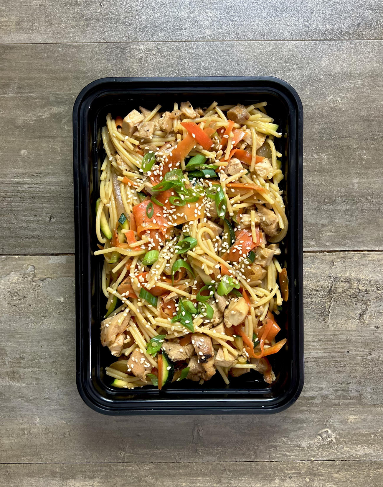

Honey Miso Noodles

Description
These noodles are quick and flavorful with chicken thighs as the protien. If you cannot find lo mein noodles, spaghetti will work in a pinch. Red miso paste should be available at your local Asian grocery.
Ingredients
For the chicken and noodles
- Twelve ounces of noodles
- One medium sweet onion
- Five medium carrots
- Two medium zucchini
- Three green onions, optional
- One tablespoon minced garlic
- Two and a half pounds boneless skinless chicken thighs
- One teaspoon garlic powder
- One tablespoon olive oil
- Salt and pepper to taste
For the sauce
- Three tablespoons honey
- Two tablespoons soy sauce
- Three tablespoons red miso paste
- One quarter cup chicken broth
- One and a half tablespoons rice vinegar
Instructions
For the sauce
- Combine all sauce ingredients, stirring well to disolve the miso paste
For the noodles
- Prepare your noodles according to the packaging. Once noodles have finished cooking, drain and store in cold water to stop the cooking process.
For the chicken
- Preheat your oven to 425°F
- In a large bowl, add your chicken. Season lightly with salt and pepper. Add one teaspoon garlic powder, one teaspoon oil, and one quarter of the sauce mixture. Toss well to combine and coat the chicken.
- Place the chicken on a sheet pan, smooth side down, and bake for eight to ten minutes on the top rack.
- After 10 minutes, turn the oven to broil and cook for 4-5 minutes to encourage the chicken to brown. Watch it carefully as it will be prone to burning under the broiler. Sometimes it helps to leave the oven door cracked open a bit.
- Once the chicken has browned and developed some color, pull it out of the oven and allow it to rest for at least 10 minutes. Temp it and make sure it is at 165°F to ensure it is done.
- Cut the chicken into small bite sized pieces. Set aside.
For the vegtables
- Wash and cut all of your vegetables. Cut the onion into thin slices and the zucchini into a julienne (thin strips). Using a vegetable peeler, go down the length of the carrot to create thin ribbons. Rougly chop the ribbons in smaller pieces with a knife. (You can use the matchstick carrots from the store to save time)
- In a large skillet add a bit of oil over medium high heat. Add in the onions and season lightly with salt. Cook for a couple of minutes until they have begun to brown.
- Make room in the center of the pan and add more oil if needed. Add the zucchini and allow it to cook down and brown a bit.
- Make room in the center of the pan again and add the carrots and garlic. Cook for a couple of more minutes to soften up the vegetables a bit.
Final steps
- In a large bowl, combine noodles, chicken, and vegtables, and the remaining sauce. Stir to combine and season to taste with salt and pepper.
- This recipe makes six servings. Divide evenly into six containers.